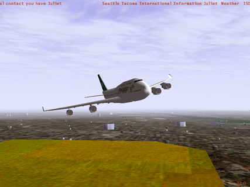

FlightGear Flight Simulator – Installation and
Getting Started
Michael Basler and Martin Spott
including contributions by
Stuart Buchanan, Jon Berndt,
Bernhard Buckel, Cameron Moore,
Curt Olson, Dave Perry,
Michael Selig, Darrell Walisser,
and others

Getting Started Version 0.8
April 5, 2006
For FlightGear version 0.9.10.